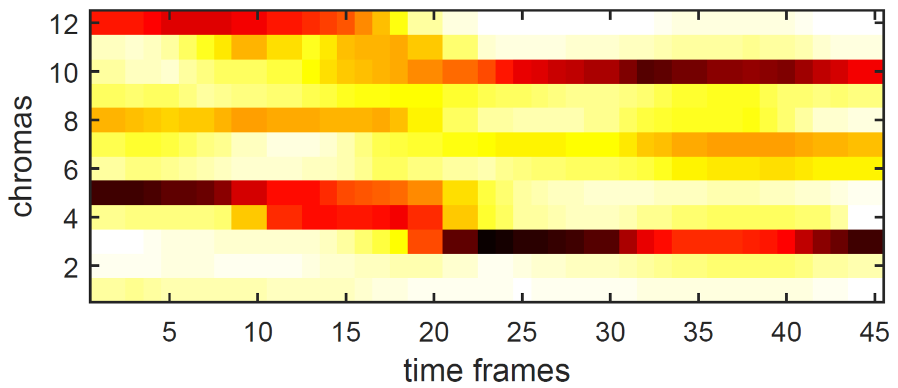
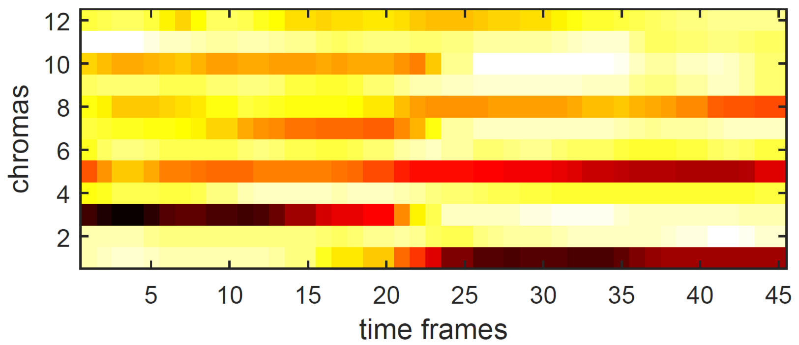
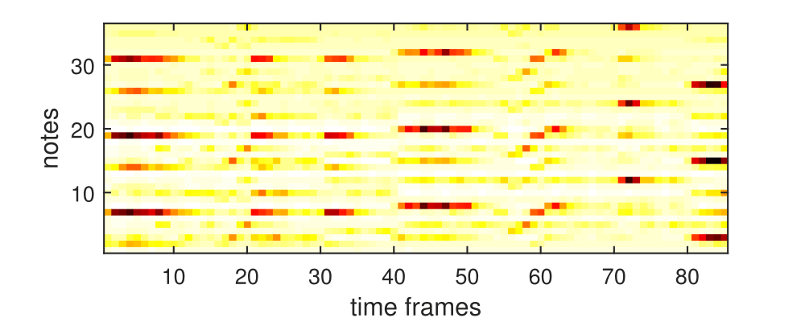
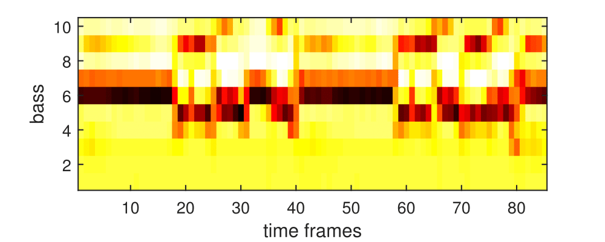

Estimation de la position des premiers temps dans un signal audio musical
We show the inputs that led to the maximum activation of the networks. The audio is also provided, with a super-imposed clic at the estimation downbeat position. It should match the 21st or the 41st time frame depending on the input size. We display 5 input per network for two differents styles. The first style is pop/rock music, and the second one is classical music.
1. Harmonic Network
| Audio signal | DNN input | |
|---|---|---|
| SH1: | ||
| SH2: | ||
| SH3: |  | |
| SH4: | ||
| SH5: |  | |
| SH6: | ||
| SH7: | ||
| SH8: | ||
| SH9: | ||
| SH10: |
2. Rhythmic Network
| Audio signal | DNN input | |
|---|---|---|
| SR1: | ||
| SR2: | ||
| SR3: | ||
| SR4: | ||
| SR5: | ||
| SR6: | ||
| SR7: | ||
| SR8: | ||
| SR9: | ||
| SR10: |
3. Melodic Network
| Audio signal | DNN input | |
|---|---|---|
| SM1: | ||
| SM2: | ||
| SM3: | ||
| SM4: | ||
| SM5: | ||
| SM6: | ||
| SM7: |  |
|
| SM8: |  | |
| SM9: |  |
|
| SM10: |
4. Bass Network
| Audio signal | DNN input | |
|---|---|---|
| SB1: | ||
| SB2: | ||
| SB3: | ||
| SB4: |  |
|
| SB5: |  | |
| SB6: | ||
| SB7: | ||
| SB8: | ||
| SB9: | ||
| SB10: |